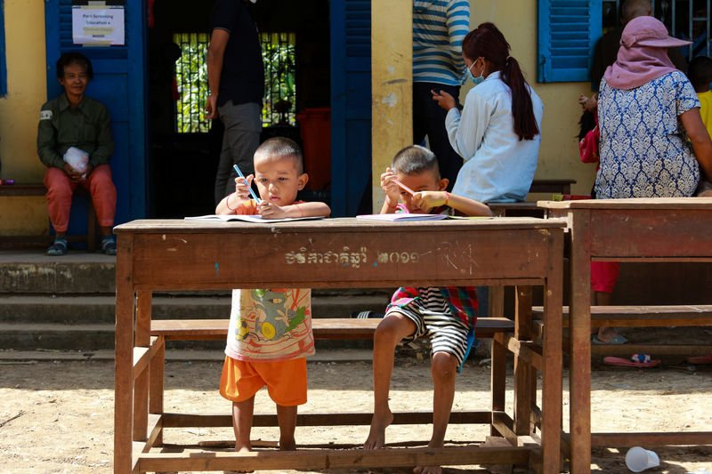
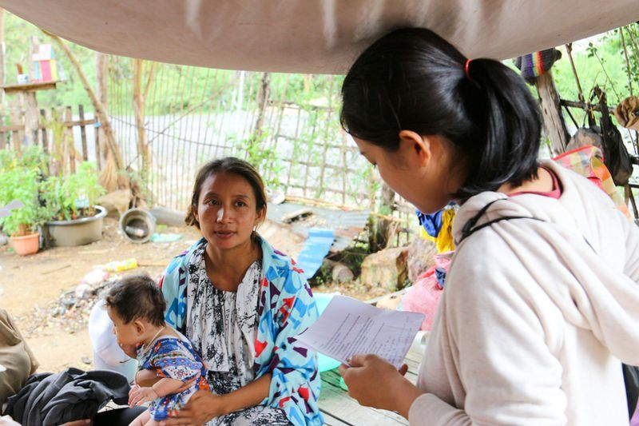
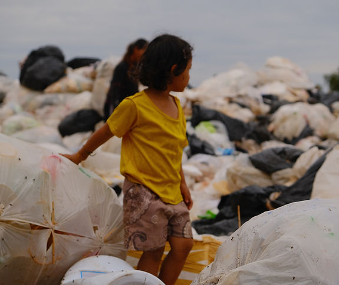
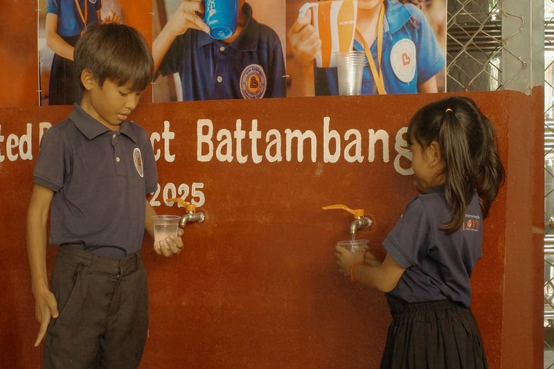
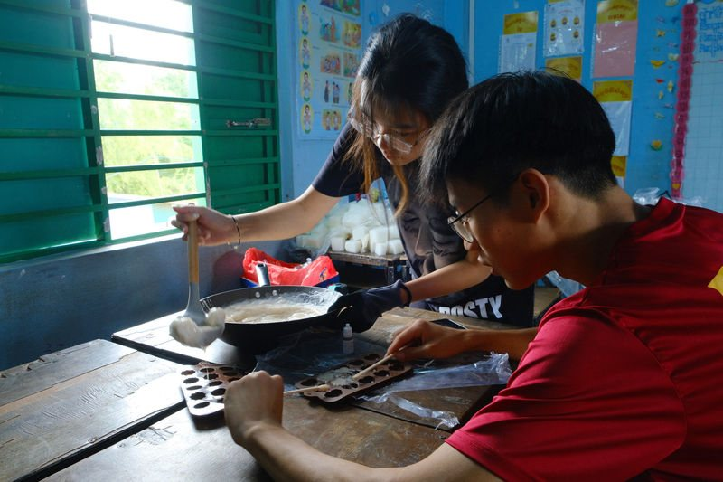
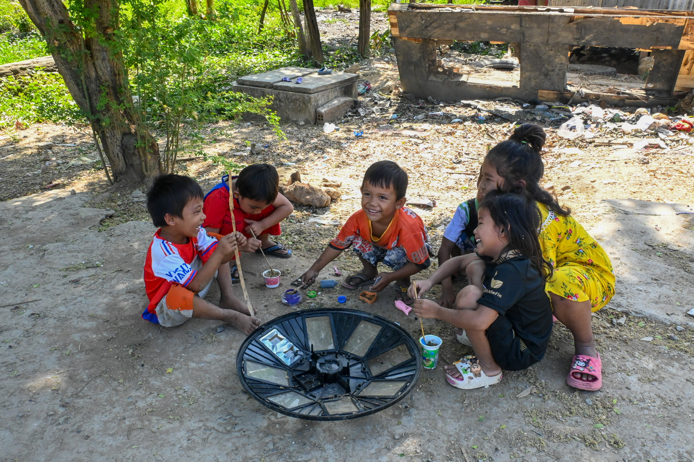
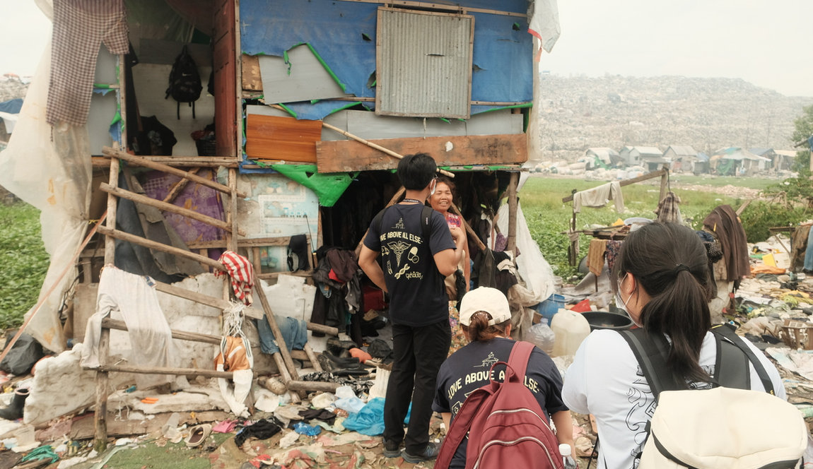

Project Battambang conducts surveys alongside screenings to collect epidemiological data so as to better understand the needs of the villagers we serve. Our Development Committee oversees the collection and analysis of data regarding the individuals we serve, utilising this information to strategically guide the direction of our project. Additionally, we are responsible for coming up with and bringing to life new and inventive ideas to further the project’s goals.

Our team trialled a mobile screening initiative, 'Veasna,' shifting away from physically written medical reports. This system allows for seamless data collection and management without the need for internet connectivity, and enables the automatic generation of referral forms, streamlining patient data management and minimising errors, to meet the needs of villagers' healthcare and wellbeing more efficiently.

Our team conducts door-to-door interviews to speak to villagers and gain a first hand understanding of their needs. Such an approach not only gives us valuable insight into the villagers' way of life, but also allows us to obtain a more comprehensive visual understanding of the village community. This year, we revamped our door-to-door surveys, transitioning to a fully digital system utilizing offline Google Sheets with dropdown menus to streamline quantitative data collection and analysis.

Recognizing the limitations of purely statistical methods, we embraced freeform home interviews to understand villagers as individuals rather than just patients. Each team was equipped with a film camera, encouraging intentional photography that captured the essence of the villagers and their homes—spaces both personal and profoundly different from our own. This initiative culminated in the creation of the Stories of Poipet book.

In May, our epidemiological studies revealed a high prevalence of gastrointestinal illnesses, linked to poor water quality. In response, we partnered with Water for Cambodia to install a water pump at the Love Without Boundaries (LWB) Rangsei School. The pump, officially inaugurated during a ceremony attended by the village chief, now serves the children of the school as well as the residents of Toul Pang Ro Village, a nearby landfill community.

To complement Education's programme at the Love Without Boundaries School, we introduced a creative educational soap-making activity to reinforce hand hygiene practices while sparking joy and creativity among the children. At Tum Nub Kor V School, we provided administrative laptops to encourage digital learning and donated sports equipment for volleyball, badminton, and soccer.
As Project Battambang enters a new phase, the Development Committee will continue to guide the project through careful needs assessment, community engagement and ground-up planning. Following our May 2026 recce trip, our focus is on better understanding the communities we may serve, while ensuring that future initiatives remain realistic, locally grounded and responsive to actual needs. Our May recce highlighted Koh Dach Island as a potential site for further exploration and future initiatives. Moving forward, we hope to deepen our understanding of the community through continued engagement with residents, village chiefs, local organisations and Cambodian partners. These conversations will help us identify specific gaps that Project Battambang can appropriately support through health, education and community-based initiatives. Beyond site exploration, the Development Committee also hopes to strengthen the way we collect and use community data. Future surveys will aim to be more focused, representative and informed by local context. We also hope to involve our Cambodian counterparts earlier in survey planning, allowing their knowledge and perspectives to shape how we understand and respond to community needs. Through these efforts, Development hopes to ensure that Project Battambang’s future direction is guided not by assumptions, but by listening, evidence and partnership.

